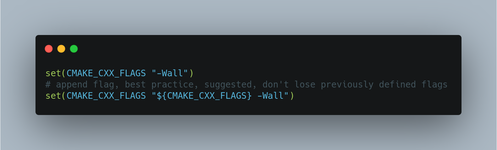
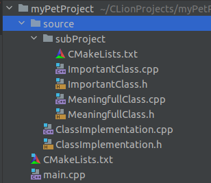
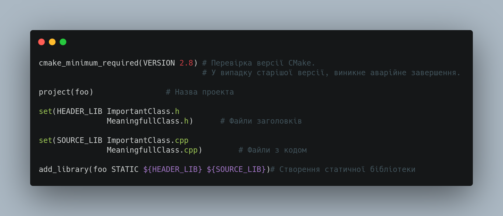
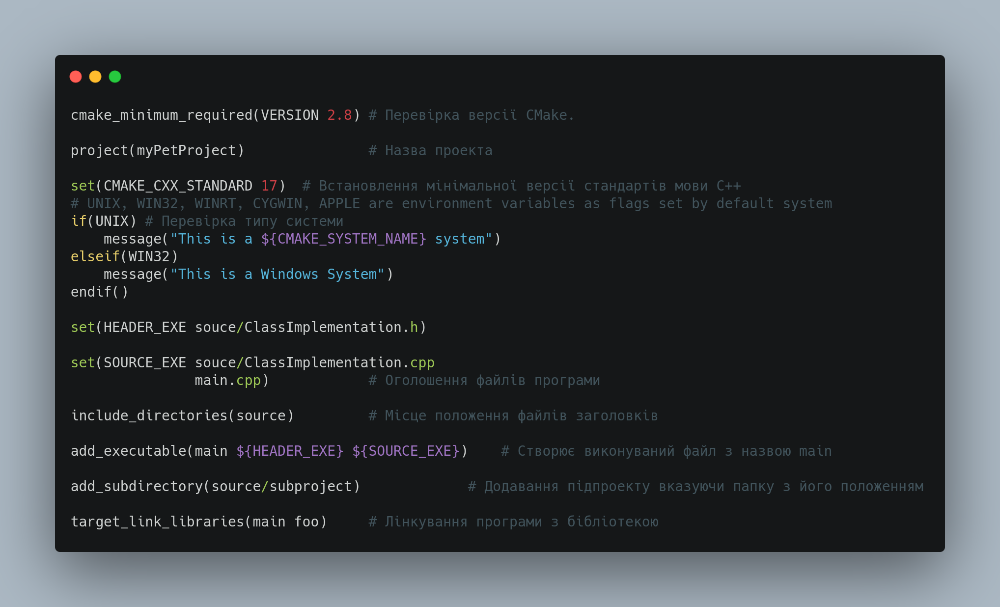
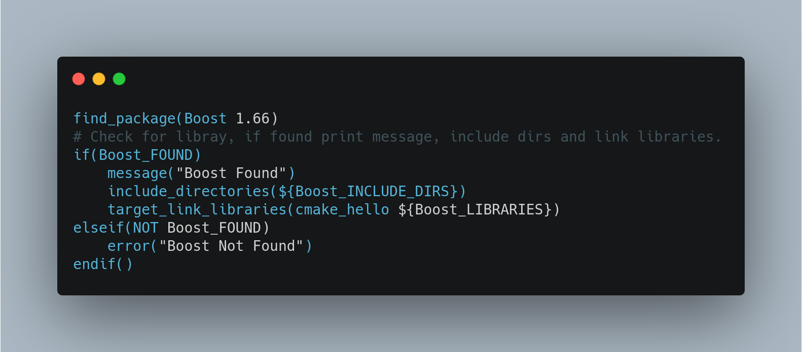

1.Що таке cmake файл?
CMake — це розширювана система з відкритим кодом, яка керує процесом збирання в операційній системі та незалежно від компілятора.
На відміну від багатьох кросплатформних систем, CMake розроблено для використання разом із рідним середовищем збірки. Прості файли конфігурації, розміщені в кожному вихідному каталозі (так звані файли CMakeLists.txt), використовуються для створення стандартних файлів збірки (наприклад, Makefiles в Unix і проектів/робочих областей у Windows MSVC), які використовуються у звичайний спосіб.
CMake може створити власне середовище збирання, яке буде компілювати вихідний код, створювати бібліотеки, генерувати оболонки та створювати виконувані двійкові файли в довільних комбінаціях. CMake підтримує збірки на місці та поза місцем, і тому може підтримувати кілька збірок з одного вихідного дерева.
CMake підтримує статичні та динамічні збірки бібліотек. Ще одна приємна особливість CMake полягає в тому, що він може генерувати файл кешу, призначений для використання з графічним редактором. Наприклад, під час роботи CMake він знаходить включені файли, бібліотеки та виконувані файли та може зіткнутися з необов’язковими директивами збірки. Ця інформація збирається в кеш-пам’ять, яку користувач може змінити перед створенням власних файлів збірки.
Cценарії CMake також спрощують керування вихідним кодом, оскільки спрощують збірку сценарію в один файл і більш упорядкований, читабельний формат.
CMake мав на меті бути кросплатформним менеджером процесу збирання, тому він визначає це власна мова сценаріїв із певним синтаксисом і вбудованими функціями. Сам CMake є програмним забезпеченням, тому його слід викликати разом із файлом сценарію для інтерпретації та створення фактичного файлу збірки.
Розробник може писати як прості, так і складні сценарії побудови, використовуючи мову CMake для проектів.
Логіка побудови та визначення з мовою CMake записуються або в CMakeLists.txt, або у файлі, що закінчується на
Написання файлів Makefiles може бути складнішим, ніж написання сценаріїв CMake. Синтаксис і логіка сценаріїв CMake подібні до мов високого рівня, тому розробникам легше створювати свої сценарії cmake з меншими зусиллями та без втрати в Makefiles.
2.Основні команди
Для того, щоб зібрати проект засобів CMake, необхідно в корені дерева вихідних файлів вказати файл CMakeLists.txt, що зберігає правила і цілі зборки, і кілька простих кроків.
Синтаксис CMake схожий на синтаксис bash, що після символу "#" є коментарем і оброблятися програмою не буде. CMake дозволяє не засмічувати дерево вихідних кодів тимчасовими файлами - дуже просто і без зайвих рухів тіла збірка проводиться «Out-of-Source».
CMake commands є подібні до C++/Java методів або функцій, які використовуються параметри як список і виконання певних дій, відповідно.
CMake Commands є випадковим. Там є комбінації, які можуть бути зроблені з cmake documentation: https://cmake.org/cmake/help/latest/manual/cmake-commands.7.html
Команди,що використовуються найчастіше
- message: Друкує повідомлення
- cmake_minimum_required: Встановлює мінімальну версію CMake для запуску
- add_executable: вказує назву файлу запуску
- add_library: додає бібліотеки, що потрібні для білду коду
- add_subdirectory: додає підпроекти в білд проекту
- if, endif
- elif, endif
- while, endwhile
- foreach, endforeach
- list
- return
- set_property (assign value to variable.)
Змінні середовища використовуються для налаштування прапорів компілятора, прапорів компонувальника, тестових конфігурацій для звичайного процесу збирання. Компілятор повинен керуватися пошуком заданих каталогів для бібліотек. Приклад використання, коли ви хочете ввімкнути всі попередження під час процесу компіляції, ви можете написати команду -Wall to build. Якщо ви створюєте свій код за допомогою CMake, ви можете додати прапорець -Wall за допомогою команди set. Детальніше.  CMake містить попередньо визначені змінні, які встановлено за замовчуванням як розташування вихідного дерева та компонентів системи. Змінні чутливі до регістру, а не команди. Ви можете використовувати лише буквено-цифрові символи та підкреслення, тире (_, -) у визначенні змінної. Деякі зі змінних можна побачити, як показано нижче, визначені відповідно до кореневої папки:
- CMAKE_BINARY_DIR: повний шлях до верхнього рівня дерева збірки та бінарної вихідної папки, за замовчуванням він визначається як верхній рівень дерева збірки.
- CMAKE_HOME_DIRECTORY: шлях до верхньої частини дерева вихідних кодів
- CMAKE_SOURCE_DIR: повний шлях до верхнього рівня дерева вихідних кодів.
- CMAKE_INCLUDE_PATH: Шлях, який використовується для пошуку файлу, шляху
3.Правила оформлення
Антишаблони CMake
Наступні списки значною мірою базуються на чудовій статті Effective Modern CMake.
Цей список набагато довший і детальніший, не соромтеся його також прочитати.
Анти-патерни
- Не використовуйте глобальні функції: це включає link_directories, include_libraries тощо.
- Не додавайте непотрібних вимог PUBLIC: вам слід уникати нав’язування користувачам чогось непотрібного (-Wall). Натомість зробіть їх ПРИВАТНИМИ.
- Не створюйте файли GLOB: Make або інший інструмент не знатиме, якщо ви додаєте файли без повторного запуску CMake. Зверніть увагу, що CMake 3.12 додає прапорець CONFIGURE_DEPENDS, який робить це набагато краще, якщо вам потрібно його використовувати.
- Пряме посилання на створені файли: завжди посилайтеся на цілі, якщо вони доступні.
- Ніколи не пропускайте PUBLIC/PRIVATE під час створення посилань: це призведе до того, що всі майбутні посилання будуть без ключових слів.
- Розглядайте CMake як код: це код. Він має бути таким же чистим і читабельним, як і весь інший код.
- Думайте про цілі: ваші цілі мають представляти концепції. Зробіть ціль (ІМПОРТОВАНОГО) ІНТЕРФЕЙСУ для всього, що має залишатися разом, і посилатися на це.
- Експортуйте свій інтерфейс: ви зможете запускати зі збірки або встановлення.
- Напишіть файл Config.cmake: це те, що повинен зробити автор бібліотеки для підтримки клієнтів.
- Зробіть цілі ALIAS, щоб зберегти узгодженість використання: використання add_subdirectory і find_package повинно забезпечити однакові цілі та простори імен.
- Об’єднайте спільну функціональність у чітко задокументовані функції або макроси: функції зазвичай кращі.
- Використовуйте назви функцій у нижньому регістрі: функції та макроси CMake можна називати у нижньому або верхньому регістрі. Завжди використовуйте нижній регістр. Верхній регістр для змінних.
- Використовуйте cmake_policy та/або діапазон версій: політики змінюються з певної причини. Лише поетапно встановлюйте СТАРИ правила, якщо потрібно.
4. Приклад готового файлу
Уявімо що в нас є проект структурований за виглядом  Нехай subProject це статична бібліотека. ЇЇ CMake файл буде виглядати наступним чином  Файли вказані в CMake файлі вказані відносно самого файлу. Деякі системи, як Clion генерують папку білда і переносять туди копії файлів проекту. Існує ризик помилки білда, якщо файли помилково вказані відносно цієї директорії Основний файл проекту виглядатиме наступним чином  Команда target_link_libraries може приймати повний список бібліотек, не тільки створених всередині проекту. Приклад перевірки існування бібліотеки перед її додаванням наведежний нижче 
Більше додаткової інформації